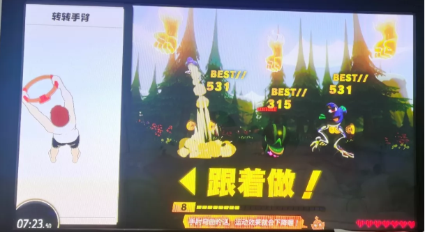
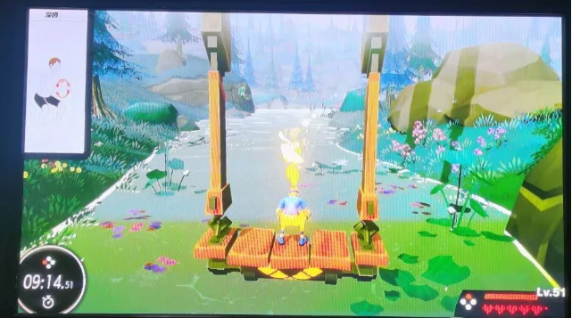
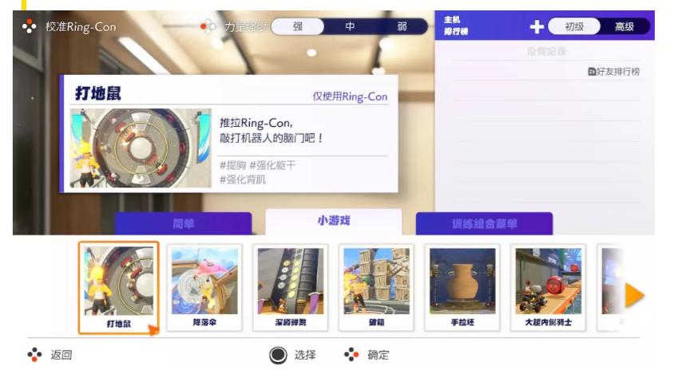
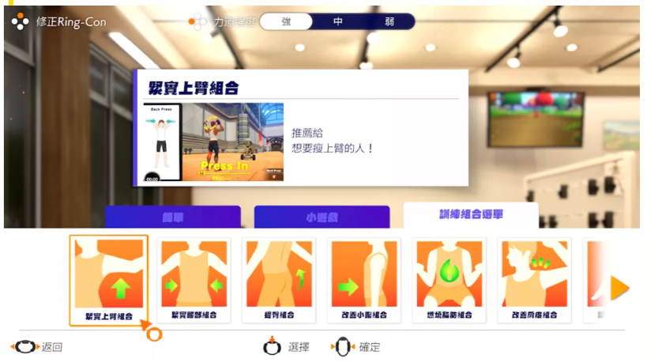

价格飙涨至发售价3倍，健身环大冒险火了！健身游戏的春天真的来了吗？
原文链接 备份链接 文/胡月 从2019年年底开始，一款名为《健身环大冒险》的Switch游戏在社交网站上迅速走红。在这款主打健身功能的游戏中，你需要通过做出相应的健身动作释放技能，一路打怪升级，推进剧情。 将枯燥的健身运动游戏化，或许正 …
*本文授权转载自公众号“我不懂你”
我希望我所爱的人过得更好，也希望我用的是更好的方式。
对于很多人来说，这都是一个过于漫长的“假期”。
除了对疫情的关注和担忧，“在家躺着就是做贡献”的我们，可能也没有想到，这会成为我们和父母在一起过得最长的一个春节。
不过，对于把健身环带回家，并且满怀期待的我来说，这意料之外的17天，给了我许多惊喜和收获。
这款带着健身功能的“游戏”，让我们全家都乐在其中，也让我的世界，对他们敞开了一角。
先夸十分钟健身环
“健身环大冒险”可能是2019年最出圈的“游戏”了（2020年很可能继续），之所以这么说，是因为它凭着自己“健身”的特性，从“主机游戏圈”一路火到了微博、小红书、微信……
毕竟，当它火了之后，很多人甚至不知道除了买它，还得另外买一台任天堂的游戏主机。
为什么它会这么火？
当我玩了将近一个月，并用它成功地征服了家人之后，我觉得我……
找不到它不火的原因。
在我看来，它有以下特点：
1、操作简单——体感
简单地说，就是你做什么，游戏里的人物就跟着做什么。
几乎不需要学习任何额外的操作，什么手柄、按键、组合……不存在的。

2、即时反馈——不让你的任何一个动作“白费”
在游戏里，手指一点，或者猛搓几分钟屏幕，游戏设计师就会用各种方式激情洋溢地告诉你：
你赢了！你成长了！你更强大了！
相比起来，我们的学习和工作就“艰难”多了。
而任天堂可贵的地方在于，它运用即时反馈，将游戏、冒险和运动结合了起来。
于是，你的每一个健身动作（哪怕是原地慢跑这么简单的动作），都会在游戏中得到体现和反馈。
比如说，路上的金币和素材；时不时遇到的所谓“怪物”；你的经验值、等级和新的服装、新的技能。
只要你在动作，你就会感觉自己“没有白做”，而是每一步都在成长。
有这些设置，你再也不会每做一个深蹲或者抬腿时都在心里叫苦：好累啊，我还要做几个？
而是气汹汹地：“看我不把你打死！”

3、贯穿游戏内外的激励系统——赞美！记录和反馈
赞美用了感叹号，是因为我发现，没有人不喜欢被赞美。
这个游戏将“健身环”这个装置拟人化，叫“灵环”，它既是一个引导者，又是一个忠实的伙伴。
它从来不批评你、否定你，只是一直温柔、热情而坚定地引导和陪伴你。
动作不会？它绝不会厌烦，更不会嫌弃你；
做到一半难以坚持？它会耐心地等候你，并为你鼓劲；
动作做得又标准又漂亮？
那完了，你会听到他的一百种花式赞美。
它的赞美并不空泛（你会觉得你值得），但也不包含任何附加条件。
只要你这个动作做得好，它就会热情地称赞你：太棒了！Beautiful！
在游戏和动作引导方面，健身环也已经做到了一个“游戏软件”能做到的极致。
生动的画面、具体的示例、下方的提示、没做对时弹出的提示和中止——基本上，无论男女老少都可以逐渐掌握它的玩法。
最后还有记录。记录是一个常被人忽视和遗忘的好习惯。在这里，每次结束，你所做动作的累积和新增次数都会被展现出来，达到一定的次数，还会给你相应的趣味称号。


4、科学健康的运动理念——休息是为了更好地坚持
在健身专业领域，已经有专业人士给出了好评：动作示范和设置都比较科学，里面的小知识也很正确；
而让我注意到的，是这款游戏的另一个理念：不必每天坚持，不必勉强，不管你中断了多久，再次回来，它依然会沿着上次的天数进行计算。
是哪种效果更好呢？
是强调你必须每天坚持，中断一天就“重新再来”；还是如果你能够坚持，那当然非常好；但是你其实可以选择坚持或者中断。
前一种隐含着对我们的不信任：如果我不强制你坚持，你肯定会放弃；
但后一种，则给予了我们充分的信任和自由，同时也隐含着自信：我相信你会喜欢，会愿意坚持锻炼，因为这是你的选择，因为我足够吸引你。
如果说任天堂推出“健身环大冒险”是为了满足玩家群体的“健身”需求，那么毫无疑问的是，它完全成功了。
事实上，只要你想过“锻炼”“健身”“减肥”，又因为种种原因难以坚持，那么你几乎不可能逃过健身环大冒险的魔爪。
反而，这款游戏对于先前已经在运动中找到了乐趣，或者早已是健身房常客的那些“肌肉爱好者”来说，倒不一定有很大的魅力。
换而言之，它面向的就是普通人、业余爱好者，是有兴趣、有需要，却没有时间或条件的我们。
不过除了让我感受到运动的快乐，健身环还带给了我一些其他的感悟。
比如说，教育；
比如说，怎么和父母相处。
在这里，我想说一说我把健身环带回家之后发生的故事。
“不讲道理”，是我最后的坚持
玩到健身环的时候，我就意识到，它不仅适合我，更适合我的家人。
如果说我还能办个健身房的卡，去请个私教，或者自己在网上搜到一套科学的运动课程对着练习；
那么，在家乡那个十八线小城市，我的父母恐怕很难选择这些方式。
他们比我更不愿意在这些方面花费太多，也不像我一样，能够方便快速地搜索到相关的资源。
更关键的是，我之所以这么不爱运动也不擅长运动，当然不是没有原因的（笑）。
但是，我又非常清楚地意识到，他们确实需要一定时间的，相对规律和科学的锻炼。
因为职业原因，他们几乎都是长期伏案的脑力劳动者；有时候一坐下，埋头工作，一个半天或者一个晚上就过去了。
身体上，虽然没有什么大毛病，但一些慢性毛病一直在困扰他们：头疼、肠胃不好、失眠；
心理上，他们多少有些焦虑和情绪波动。
所有这些问题，都不是药物或者手术能够解决的。
所有人（包括他们自己）也都会说：
要运动呀！要锻炼呀！
对啊，适度的锻炼当然对人的身体和心理都很有好处。
但是，从说到做，有这么简单吗？
“听过那么多的道理，却依然过不好这一生。”
的确如此。
一直以来，我都不愿意再将“讲道理”这种交流方式沿用下去；
所以，当我确实发现我的家人也需要运动时，我知道，和他们“苦口婆心”地讲：
“运动好运动棒”；
或者晓之以理动之以情地告诉他们：
“再不运动，身体就更差了”
“都是因为你不运动，所以才容易头疼”；
又或者在他们不舒服的时候“冷眼嘲笑”：
“看吧？别人都没有感冒，就你感冒了，叫你不运动吧？”
之类，是不会有任何作用的。
说得更严重一些，上面的这些交流方式，在我眼里，是居高临下、傲慢和“站着说话不腰疼”的。
更关键的，我和他们一样，也都需要锻炼、却同样没有成功坚持过；
所以，我更没有立场去这样“教育”他们。
于是，我一直在留意，也在思考，有什么办法，可能会让他们养成运动的习惯？
寻找这个答案的过程，我也有些焦虑；
特别是看到他们抱怨自己不舒服时，我总会感到焦急和困扰：
该怎么办？
直到健身环出现，我觉得，我找到答案了。
带回家，让他们也试试。
不报任何期待，也许就能收获惊喜
实话说，这次回家，健身环就是我最大的期待：
我希望它能征服我的家人；
虽然一个从来不玩游戏，甚至视游戏为仇敌；
另一个虽然也玩点游戏，却十足是个傲娇直男。
想安利这两个人，还真是有点难度。
本来还想我亲自示范，结果没两分钟，我爸就把我赶下去了：
我来试试！
我还挺开心，但是一上手，发现虽然它的操作在我眼里真的非常简单，但是在没有接触过这类产品的他们手中，还是有点困难。
我站在旁边，有点心急，但一直克制住自己想“伸手帮忙”的冲动。
因为很有意思的是：
虽然每个人在教别人做什么事或者帮忙的时候，只要对方一时间没有学会，都本能地想要直接伸手；
但一旦角色替换，自己成为那个在学习和摸索的人时，只要别人直接插手帮了自己，结局一定是失败的。
脾气好或者比较懒的人可能不介意别人“代劳”，但是他也肯定没有学到真正的知识；自尊心强或者脾气差一点的，还很可能当场生气。
显然，如果我强行“代劳”，那么他们很可能就会失去兴趣。
还好，磕磕绊绊地，我爸还是顺利地进入了冒险关卡。
看着他有些笨拙地原地慢跑，然后学习着挤压和拉开环，获得路边的金币……我妈坐在沙发上，情不自禁地围观着我们。
我趁机对她说，“你看，这个地图好看吧？”

我妈矜持地点了点头。
等我爸打完一次怪兽，过完一个地图，可能是新鲜感过去，也可能是因为他还没习惯，玩得不太顺畅，于是，他选择让我妈来试试。
意料之中的，我妈以“这是给你们玩游戏的人设计的，我不会玩，我肯定玩不好”拒绝了。
说实话，我的心在那一刻有点“凉”；
但我还是没有采取什么强制行为，只是安慰自己，不玩就不玩吧。
不过，显然夫妻俩之间自有一套沟通方式，在我爸的不依不饶下，我妈傲娇地提出了几个要求，才终于答应下场一试。
健身环的魔力就在于，只要你开始尝试，你就几乎不可能放弃。
感受到自己的每一个动作都得到实时反馈，在“灵环”热情洋溢的赞美和鼓励下，我妈很快就适应了，而且有些动作比我爸还标准。
我的心情也像过山车一样起伏：
看来能行！
结果，两个人“试完”之后，都没有“欲罢不能”的意思。
我心里的过山车也一个猛子扎进地里了：
看来还是不太行。
收拾好装备，我几乎已经放弃了。
原本，在我的期待或者想象中，他们应该能很快上手，并且马上从中感受到乐趣，“欲罢不能”，还要给这个东西“点赞”。
但是，现实似乎没有我想得这么“美好”。
他们还是有些不太明白操作规则，也没有表现出非常大的兴趣。
——算了吧，不玩就不玩，勉强也没意思。
转眼到了第二天，我还在床上睡觉时，忽然听到外面客厅里传来我熟悉的声音。
咦？
本来，想在电视上运行健身环，还要把HDMI线拔出来插到底座的插口，还要按好几个键……之前这些都是我操作的，没想到他们已经玩上了？
果然，客厅里，我爸已经再度拿起了健身环。
于是，这之后的每一天，我家都会响起健身环大冒险的声音。
这一切和我想象的不一样，但却比我想象的更好、更真实：
他们的确没有马上掌握操作方式，但是每一次都比上一次更熟练；
他们也没有和我一样，只专注于其中的冒险模式，而是兴致盎然地把什么都试了一遍，然后找到了各自最爱玩、最擅长的小游戏和模式；并且乐此不疲地开始彼此竞争、比赛，也非常友好地提示、帮助对方；

看着他们完全地投入、沉浸在里面，为打倒了怪物而欢呼、为拿到了最高分而兴奋、为超过了对方而“耀武扬威”，为帮助对方而焦急地在场外连声提示、打气；
看到他们自己玩时，遇到困难的动作，又“气”又“恨”，却依然能咬牙坚持；在对方这样时，先是“幸灾乐祸”，但还是会由衷地鼓励、赞扬对方；
看到他们玩了半个小时、一个小时后浑身微汗、那种运动过后的快乐和成就感……
我每次都会情不自禁地露出笑容。
实话说，这样的场景，在我家并不多见。
也是在他们游玩的过程中，我才发现，真的只有放下“期待”、放下自己的“想象”和“要求”，才能收获到真实和惊喜。
和眼前这样让人发自内心地喜悦和开心的画面比，我一开始的“想象”，多么单薄而脆弱。
是“教育”，还是引导和支持
如我开头所说的那样，健身环本身，是一个非常有效的“培养健身兴趣和习惯”的产品。
之所以能这么有效，是因为它遵循了一系列的理念，而这些理念，正是最好的“教育”方式。
我们通常所说的“教育”，其实多少有些“居高临下”。
同样，我们所默认的教育方式，也一样充满了“说教”“灌输”的味道。
它的本质在于，我们会把“教育”，当成是“上对下的传播”“有对无的灌输”。
我们默认，“教育者”比“被教育者”懂得更多、更正确、更优势、也更优越。
被教育者则是无知的、不足的、茫然的、错误的、也是地位更低的。
但是，这样是对的吗？
或者说，这样的“教育”，能成功吗？
健身环显然从未想过要“教育”它的玩家，它只是被设计出来，尽可能地让各种各样的人，都能最大化地感受到“运动”的乐趣和成就，从而主动地去坚持、去学习、去每天都要打开它，和它见面。
我也一直在努力不去“教”我的父母玩健身环。
第二天开始，我就不再站在他们身边，紧张兮兮地等着“帮忙”。
即使第一天的时候，他们都明显地表现出了不适应和不习惯。
但是很快，我发现，开始的“不会”是真的，但他们探索和学习的速度也是真的。
特别是在没有我站在一边试图“帮忙”之后。
人本来就有好奇心。
人也天然具有探索和学习的能力。
没有我的“指导”、没有我的“代劳”，他们会反复“犯错”，但是一旦成功，就几乎不会再忘记。
学习新的动作时，我也想看到他们“一次性学会，动作完美又标准”；
但是他们第一次是50分、60分、第二次、第三次就是80分、再之后就是90分、100分。
而我所做的，只是在他们需要的时候，在他们实在是搞不定的时候，在他们主动向我提问的时候，向他们示范或者讲解。
更多的时候，我的存在只是一种“支持”，即，他们需要帮忙的时候，有我在。
这个过程当然需要时间；
但当他们完全不需要我，也能畅玩无阻的时候，我发现，我很快乐。
我亲眼见证了他们面对新事物，自由地探索、尝试，在引导、支持和鼓励中，感受到喜悦和成长的过程。
这也是我玩健身环的过程。
所以，我最开始的“期待”，实现了。
健身环的确征服了他们，也给我家带来了很多欢乐。
我很欣慰，也有些骄傲：这证明，我的坚持是对的。
似乎，我们这一代，长大后，和父母的相处和交流，总是有些别扭、僵硬甚至是冲突。
我很早就发现，和他们说话，有时是“无话可说”，有时是“话不投机”。
但是，我们之间，都依然真心地希望对方过得好，过得健康，过得快乐。
哪怕这一希望，往往就是引发冲突的根源。
我理解，在父母那里，他们对我的希望，自有一番图景。
稳定的工作、稳定的伴侣、早日结婚、生子，成家立业。
过着这样的小日子，就是他们最大的期望。
其实在我这里，我也有对他们的希望。
越是走入社会，就越能理解、也越心疼他们。
所以，我反而希望，他们能多关心关心自己。
我希望他们能找到自己的兴趣爱好、能有自己的生活、能把自己的健康放在心上。
能像我一样，更自由、更快乐。
然而，有时候我会发现，其实，我们对父母的这份期待，就像父母对我们的期待一样，可能是一种“美好的强求”。
想明白这一点后，我释然了很多。
那么，在他们真的有某些需求，而我又能找到更好的东西；
并且能用更好的方式分享给他们的时候；
我们都会很开心吧？
在这一点上，我正在努力尝试。
有时候，我也会忍不住用过去的方式，用“居高临下”的、“不耐烦”的、“傲慢”的方式对待他们。
但是带着健身环回家的这17天，它再次告诉我，哪种方式更好。
我们这一代人，可能都受过那一种“教育”，都被那样对待过（也可能现在还是）：
“被”认为冷、“被”认为饿、“被”认为“你需要被教育”；
而教育的方式，则是“讲大道理”“插手代劳”“放任不管”；
教育的态度，没有很多很多的鼓励、赞美，但有很多的指责、打击、甚至嘲笑和否定；
……
如果我们还是小孩，我们只能乞求、愤怒、威胁父母，希望他们用这样的、更好的方式；
但，我们已经独立、成年了。
所以，如果有更好的方式，我想，那或许应是我们的责任了。
很遗憾的是，如今健身环因为种种原因，很难及时买到。
等疫情过去，下次回家，我打算带一套新的给他们。
虽然我从来没有问过他们对健身环的感受，但是我想，无论如何，他们的确体验到了运动带来的乐趣。
我也从未期待健身环的出现能够带来什么惊天动地的改变（比如让他们变成健身狂魔），但是我想，下一次，我邀请他们运动时，他们一定不会再那么迟疑。
对于他们，这个上手简单、即玩即放、自由有趣的“游戏”，是我作为子女给他们的心意，也是我作为成人的一个坚持：
我希望我所爱的人过得更好，也希望我用的是更好的方式。
健身环也许不是一个普遍适用的标准答案，但我们的态度和尝试，才是关键。
原文链接 备份链接 文/胡月 从2019年年底开始，一款名为《健身环大冒险》的Switch游戏在社交网站上迅速走红。在这款主打健身功能的游戏中，你需要通过做出相应的健身动作释放技能，一路打怪升级，推进剧情。 将枯燥的健身运动游戏化，或许正 …
原文链接 备份链接 牵一发而动全身。 这周，热门动画《恋爱中的小行星》第七话将推迟一周播出。原定的播出时间将改为放送总集篇。 总集篇是一个剪辑已经播出的动画片段，是一个只有在最紧急的时刻才会使用的凑数手段。很显然，这部动画的制作遇到了 …
原文链接 备份链接 受到新冠疫情影响，大部分行业都陷入了停滞，尤其是线下的第三产业行业，以饭馆，KTV，商场为首，这段时间可谓是愁云惨淡；电影行业和饭馆相比也差不多惨，上游拍摄剧组全停，下游影院电影撤档的撤档，影厅关闭的关闭，从上到下 …
原文链接 备份链接 图片来源：unsplash 记者：伍洋宇 “ 在情况未得到缓解之前，Switch及其游戏价格很可能会有不同程度的走高趋势。 ” 尽管《健身环大冒险》价格走高引起了一些消费者的不满，但它可能很快连买也买不到了。 据彭博社 …
原文链接 备份链接 无论是漩涡中心的武汉，还是看似平静的小城，人们正在通过游戏建立新的纽带。 _编辑_陈静2020年02月18日 15时33分 本文为今日头条“编舟计划”系列文章第13篇。 编舟计划，记录游戏与时代，只收集与游戏相关最优秀 …